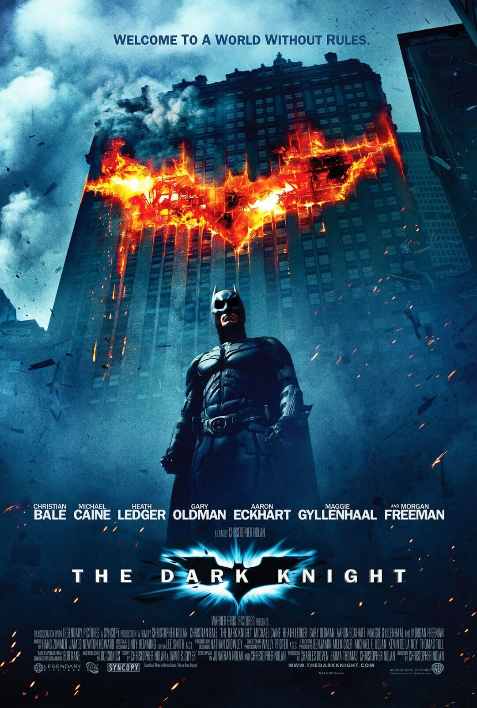

The dark knight
Genero: accion
Año: 2008
Duracion: 2:32hrs
Batman/Bruce Wayne (Christian Bale) regresa para continuar su guerra contra el crimen. Con la ayuda del teniente Jim Gordon (Gary Oldman) y del Fiscal del Distrito Harvey Dent (Aaron Eckhart), Batman se propone destruir el crimen organizado en la ciudad de Gotham. El triunvirato demuestra su eficacia, pero, de repente, aparece Joker (Heath Ledger), un nuevo criminal que desencadena el caos y tiene aterrados a los ciudadanos.